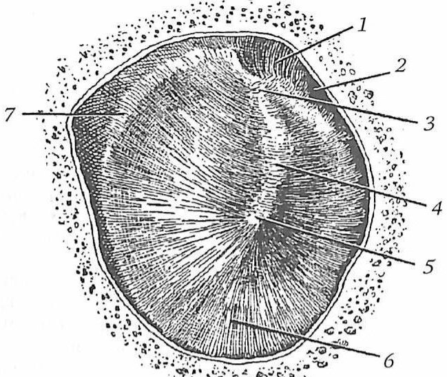
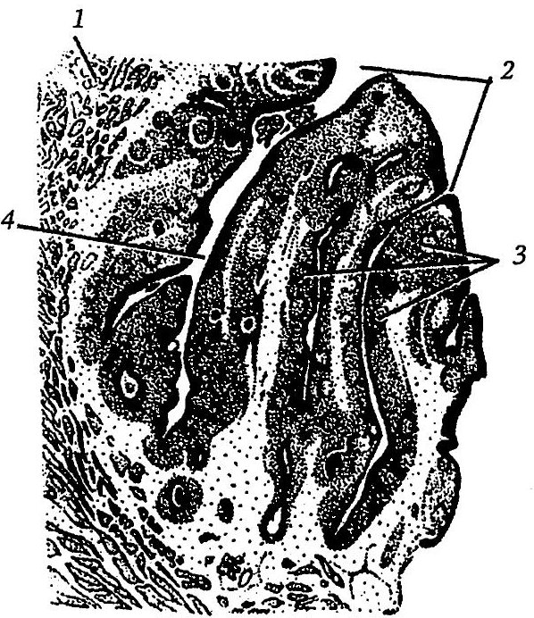
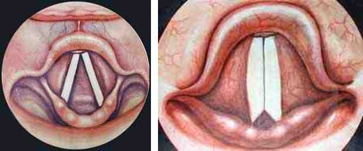

Словарь: Н
- Н2-ГБ сокращение
- блокаторы H2-гистаминовых рецепторовГастроэзофагеальная рефлюксная болезнь у детей, «Список сокращений», с. 4
- НА сокращение
- ГемагглютининГрипп у детей, «Список сокращений», с. 5
- Нависание задневерхней стенки наружного слухового прохода
- Признак мастоидита (симптом Шварца): следствие периостита передней стенки сосцевидной полости и давления патологического содержимого на вход в сосцевидную пещеру и на саму пещеру; сопровождается воспалительными изменениями барабанной перепонки.не из КР: Нацруководство «Оториноларингология» под ред. В. Т. Пальчуна, гл. 11 «Болезни уха», раздел «Мастоидит»
- Надгортанник
- Листовидный хрящ гортани из эластичной ткани, закрывающий вход в гортань при глотании. В отличие от остальных хрящей гортани он не пропитывается солями кальция и не окостеневает.не из КР: Бабияк В. И., Накатис Я. А., Говорун М. И. «Оториноларингология. Руководство», т. 2 (СПб.: Питер, 2009), с. 15–16
- Надпороговая аудиометрия
- Исследование слуха звуками, интенсивность которых намного превышает пороговую. Применяется для выявления феномена ускоренного нарастания громкости, который возникает при поражении волосковых клеток. При двусторонних поражениях используют Si-Si-тест, определение порога дискомфорта и тест Люшера, при односторонней тугоухости тест выравнивания громкости по Фоулеру. Метод субъективный, поэтому для выявления феномена проводят два и более надпороговых теста.не из КР: Пальчун В. Т., Лучихин Л. А., Магомедов М. М. «Руководство по практической оториноларингологии» (М.: МИА, 2010), с. 86–88
- Надпочечник
- парная железа внутренней секреции, расположенная в забрюшинном пространстве над верхним полюсом почки и состоящая из мозгового и коркового вещества.Первичная надпочечниковая недостаточность , «Термины и определения»
- Надскладочный отдел гортани
- Гортанная поверхность надгортанника (включая верхушку), черпалонадгортанные связки, черпаловидные хрящи и межчерпаловидная область, часть надгортанника ниже подъязычной кости, вестибулярные складки и гортанные желудочки.не из КР: КР «Рак гортани», раздел «Термины и определения», с. 5
- Надтубарный и тимпанальный синусы
- Труднодоступные для осмотра участки среднего уха. Тимпанальный синус (sinus tympani, задний синус) — пространство позади задней ножки стремени; к нему ведёт ниша окна улитки. Надтубарный синус (supratubal recess) — небольшая ниша в верхней трети передней стенки барабанной полости, которую от переднего эпитимпанального пространства может отделять тензорная складка.не из КР: Watkinson J. C., Clarke R. W. (eds). Scott-Brown’s Otorhinolaryngology, Head and Neck Surgery, 8th ed., vol. 2, p. 574 (PDF)
- Надхрящница
- Оболочка, покрывающая хрящ ушной раковины и наружного слухового прохода. Плотная спаянность кожи с надхрящницей на наружной поверхности раковины способствует образованию при травме стойких гематом, которые самостоятельно не рассасываются.не из КР: Бабияк В. И., Накатис Я. А., Говорун М. И. «Оториноларингология. Руководство», т. 2 (СПб.: Питер, 2009), с. 268
- Назальный провокационный тест
- Метод, при котором определённый аллерген наносят непосредственно на слизистую оболочку, а именно на головку нижней носовой раковины. Риноманометрия до и через 20 минут после нанесения подтверждает местное аллергическое действие по уменьшению проходимости носа. Тест может вызвать тяжёлую аллергическую реакцию вплоть до анафилактического шока.не из КР: Probst R., Grevers G., Iro H. Basic Otorhinolaryngology, с. 20
- Назогастральный зонд
- Зонд для питания через нос; его часто применяют после операций, когда кормить не через рот нужно от нескольких дней до нескольких недель (при ожидаемом сроке более 4 недель рассматривают гастростомию). Противопоказан, в частности, при переломах основания черепа, решётчатой пластинки и клиновидной пазухи (опасность попадания зонда в полость черепа), выраженной коагулопатии, повреждениях пищевода и желудка.не из КР: Watkinson J. C., Clarke R. W. (eds). Scott-Brown’s Otorhinolaryngology, Head and Neck Surgery, 8th ed., vol. 3, p. 568 PDF
- Назоликворея
- ликворея в полость носа через дефект твёрдой мозговой оболочки в передней черепной ямке.Перелом верхней челюсти, «Термины и определения», с. 6
- Назоорбитоэтмоидальный комплекс
- Область анатомического слияния носа, глазниц и решётчатой кости; переломы этой области сложны и часто остаются нераспознанными, а отсроченная реконструкция крайне трудна. Классифицируются по связи фрагмента с медиальными связками угла глаза (Markowitz).не из КР: Watkinson J., Clarke R. (eds.). Scott-Brown's Otorhinolaryngology, Head and Neck Surgery, 8th ed., vol. 1 (CRC Press, 2018), ch. 107 «Nasal and facial fractures», p. 1198
- Назубные шины
- Шина-дуга (arch bar) представляет собой металлическую полосу, которую проволокой прикрепляют к нескольким зубам каждой челюсти; её изготавливают заранее по слепку или формируют во время операции. Перекрывает небольшие промежутки в зубном ряду, но не подходит при протяжённых дефектах и отсутствии задних зубов. Главное достоинство шины — простая стабилизация сложных переломов и непрямая фиксация; верхнюю и нижнюю шины, как правило, соединяют резиновыми тягами.не из КР: Watkinson J. C., Clarke R. W. (eds). Scott-Brown’s Otorhinolaryngology, Head and Neck Surgery, 8th ed., vol. 1, p. 1239 PDF
- Наковальне-стременное сочленение
- Сустав (articulatio incudostapedia) между длинной ножкой наковальни и головкой стремени. Длинная ножка наковальни идёт параллельно рукоятке молоточка.не из КР: Бабияк В. И., Накатис Я. А., Говорун М. И. «Оториноларингология. Руководство», т. 2 (СПб.: Питер, 2009), с. 274; Гайворонский И. В. и соавт. «Функциональная анатомия ЛОР-органов» (СПб.: СпецЛит, 2022), с. 66 PDF; Пальчун В. Т., Лучихин Л. А., Магомедов М. М. «Руководство по практической оториноларингологии» (М.: МИА, 2010), с. 93
- НАР сокращение
- неаллергический ринитХронический ринит, «Список сокращений», с. 4; Аллергический ринит, «Список сокращений», с. 5
- Наркотические вещества
- природные или синтетические вещества и препараты, включенные в Перечень наркотических средств, психотропных веществ и их прекурсоров, которые подлежат контролю в Российской Федерации (РФ) [1].Острые отравления опиоидными наркотическими веществами, «Термины и определения»
- Наружная стенка полости носа
- представлена медиальной стенкой верхнечелюстной пазухи.Рак полости носа и придаточных пазух, «Термины и определения», с. 4
- Наружное ухо
- Часть органа слуха, которая состоит из ушной раковины, наружного слухового прохода и кожного слоя барабанной перепонки.не из КР: Бабияк В. И., Накатис Я. А., Говорун М. И. «Оториноларингология. Руководство», т. 2 (СПб.: Питер, 2009), с. 266
- Наружный отит (НО) 2 значения
- 1воспаление ушной раковины, наружного слухового прохода и эпидермального слоя барабанной перепонки.Наружный отит у детей, «Термины и определения», с. 5; Наружный отит, «Термины и определения»В разборах: Наружный отит у детей, Грибковый отит, Отит средний острый
- 2заболевание, характеризующееся воспалительными изменениями в структурах ушной раковины, наружного слухового прохода и эпидермального слоя барабанной перепонки.Наружные отиты, «Термины и определения», с. 5В разборах: Наружные отиты
- Наружный слуховой проход
- Продолжение полости ушной раковины: начинается наружным слуховым отверстием и заканчивается барабанной перепонкой. Состоит из наружной перепончато-хрящевой и внутренней костной частей, длина которых соотносится как 2 : 1; форма определяется двумя изгибами, поэтому при осмотре ушную раковину оттягивают кзади и книзу.не из КР: Бабияк В. И., Накатис Я. А., Говорун М. И. «Оториноларингология. Руководство», т. 2 (СПб.: Питер, 2009), с. 270
- Нарушение ритма
- нарушение нормальной физиологической очередности сокращений сердца.Отравление сердечными гликозидами и препаратами аналогичного действия, «Термины и определения»
- Нарушение сознания («impairment of consciousness»)
- смотри «нарушенное сознание».Эпилепсия и эпилептический статус у взрослых и детей, «Термины и определения»
- Нарушения миграции нейронов
- Нарушения миграции нейронов и мальформации коры (атипичный рисунок извилин в виде лиссэнцефалии или полимикрогирии) наилучшим образом диагностирует магнитно-резонансная томография; она же выявляет кортикальную атрофию и задержку миелинизации, но недостаточно чувствительна к кальцификатам.не из КР: КР «Врожденная цитомегаловирусная инфекция», раздел 1.6, с. 10
- Нарушения сознания
- острые преходящие нарушения психической деятельности, сопровождающиеся расстройством восприятия окружающего, дезориентировкой во времени, месте, нарушением мышления с затруднением суждений и последующей более или менее выраженной амнезией. Расстройства сознания являются наиболее частыми психопатологическими синдромами, которые возникают у психически больных при критических состояниях.Шизофрения, «Термины и определения»
- Наследственная геморрагическая телеангиэктазия
- Заболевание (болезнь Рандю—Ослера—Вебера) с аутосомно-доминантным наследованием, при котором поражаются сосуды кожи, слизистых оболочек и внутренних органов. Типичные признаки — телеангиэктазии, артериовенозные мальформации и аневризмы; рецидивирующие носовые кровотечения наблюдаются примерно у 93% больных.не из КР: Watkinson J. C., Clarke R. W. (eds). Scott-Brown's Otorhinolaryngology, Head and Neck Surgery, 8th ed., vol. 1, с. 1180
- Наследственный ангиоотёк (НАО)
- редкое, потенциально жизнеугрожающее генетически детерминированное заболевание, проявляющееся в виде АО кожи и слизистых/подслизистых оболочек, возникающих под воздействием брадикинина (БК). Характерными особенностями АО при НАО являются отсутствие зуда, гиперемии кожи, сопутствующей крапивницы, а также отсутствие эффекта от лечения кортикостероидами системного действия и антигистаминными средствами системного действия [1–4].Наследственный ангиоотёк, раздел 1.1
- Натянутая и ненатянутая части барабанной перепонки
- Барабанную перепонку делят на натянутую и ненатянутую (расслабленную) части. Границей служат выстоящий короткий отросток молоточка и две отходящие от него складки — передняя и задняя. Натянутая часть занимает большую часть поверхности, ненатянутая — меньшую, расположенную сверху.не из КР: Пальчун В. Т., Лучихин Л. А., Магомедов М. М. «Руководство по практической оториноларингологии» (М.: МИА, 2010), с. 67; Бабияк В. И., Накатис Я. А., Говорун М. И. «Оториноларингология. Руководство», т. 2 (СПб.: Питер, 2009), с. 276
- НВК сокращение
- нейроваскулярный конфликтКраниальные мононейропатии у взрослых, «Список сокращений», с. 4
- НГТ сокращение
- наследственная геморрагическая телеангиоэктазияМальформация кровеносных сосудов головы и шеи, «Список сокращений», с. 4; Носовое кровотечение, «Список сокращений», с. 4
- Нёбно-глоточная недостаточность
- Неспособность нёба прилегать к задней стенке глотки и закрывать носоглотку при речи и глотании: возникают выделение воздуха через нос и гиперназальная (гнусавая) речь. Может развиваться после операции по поводу расщелины нёба, при субмукозной расщелине и после аденотомии; по КР, нарушение целостности велофарингеального сфинктера затрудняет формирование правильной речи.не из КР: Watkinson J., Clarke R. (eds.). Scott-Brown's Otorhinolaryngology, Head and Neck Surgery, 8th ed., vol. 2 (CRC Press, 2018), ch. 18 «Cleft lip and palate», p. 192; КР «Одно- и двусторонняя расщелина верхней губы, альвеолярного отростка, твердого и мягкого нёба», раздел 1.5, с. 6
- Нёбные дужки
- Передняя (нёбно-язычная, arcus glossopalatinus) и задняя (нёбно-глоточная, arcus pharyngopalatinus) дужки с боков ограничивают зев. Расходясь книзу, они образуют типичную форму надминдаликового пространства — треугольную ямку с ровными стенками.не из КР: Бабияк В. И., Накатис Я. А., Говорун М. И. «Оториноларингология. Руководство», т. 1 (СПб.: Питер, 2009), с. 418, 419, 462
- Нёбные миндалины
- Парные крупные скопления лимфоидной ткани во внутреннем лимфоидном кольце глотки (кольце Пирогова — Вальдейера); состоят из стромы и паренхимы и лежат в тонзиллярных нишах. Относятся к лимфоэпителиальным органам.не из КР: Бабияк В. И., Накатис Я. А., Говорун М. И. «Оториноларингология. Руководство», т. 1 (СПб.: Питер, 2009), с. 423–425
- Нёбные пластинки
- Ортодонтические аппараты, которые применяют у детей 0–3 месяцев с расщелиной губы и нёба до операции: они облегчают кормление, разделяют ротовую и носовую полости и корригируют деформацию челюстей.не из КР: КР «Одно- и двусторонняя расщелина верхней губы, альвеолярного отростка, твердого и мягкого нёба», раздел 3.1, с. 13
- Невринома преддверно-улиткового нерва
- Доброкачественная инкапсулированная опухоль, первично развивающаяся во внутреннем слуховом проходе из невролеммы (шванновской оболочки) вестибулярного нерва; растёт в направлении мостомозжечкового угла, заполняет боковую цистерну мозга и растягивает черепные нервы. Заполняя внутренний слуховой проход, сдавливает внутреннюю слуховую артерию. В клинических рекомендациях ту же опухоль называют невриномой слухового нерва или акустической шванномой.не из КР: Бабияк В. И., Накатис Я. А., Говорун М. И. «Оториноларингология. Руководство», т. 2 (СПб.: Питер, 2009), с. 761
- Недоношенность
- рождение ребенка ранее 37 полных недель беременности. В зависимости от гестационного возраста недоношенные новорожденные подразделяются на экстремально недоношенных (<28 недель гестации), очень недоношенных (28–31 недели гестации), умеренно недоношенных (32-33 недели гестации) и поздних недоношенных (34-36 недель беременности).Бронхолегочная дисплазия, «Термины и определения»
- Нейраминидаза
- Один из двух поверхностных белков вируса гриппа (наряду с гемагглютинином). По сочетанию этих белков различают подтипы вируса гриппа A: известно 16 вариантов гемагглютинина (H) и 9 вариантов нейраминидазы (N).не из КР: Watkinson J. C., Clarke R. W. (eds). Scott-Brown’s Otorhinolaryngology, Head and Neck Surgery, 8th ed., vol. 1, p. 198
- Нейроваскулярный конфликт (НВК)
- ситуация взаимодействия нерва и сосуда, при которой на уязвимый участок нервного корешка оказывает воздействие рядом проходящий с ним сосуд.Краниальные мононейропатии у взрослых, «Термины и определения», с. 6
- Нейровизуализация
- общее название группы инструментальных методов визуальной оценки структуры, функций головного мозга (например, компьютерная томография (КТ), магнитно-резонансная томография (МРТ), однофотонная эмиссионная компьютерная томография (ОФЭКТ), позитронная эмиссионная томография (ПЭТ)).Когнитивные расстройства у лиц пожилого и старческого возраста, «Термины и определения»
- Нейродегенеративные заболевания
- группа заболеваний центральной нервной системы, для которых характерна прогрессирующая гибель определенных групп нервных клеток с сопутствующей атрофией соответствующих отделов головного и/или спинного мозга.Когнитивные расстройства у лиц пожилого и старческого возраста, «Термины и определения»
- Нейропатическая боль
- боль, вызванная заболеванием или повреждением соматосенсорной нервной системы (центрального или периферического отделов). Нейропатическая боль может персистировать даже без продолжающейся стимуляции.Хронический болевой синдром (ХБС) у взрослых пациентов, нуждающихся в паллиативной медицинской помощи, «Термины и определения»
- Нейрорафия
- Шов повреждённого нерва. Первичную нейрорафию лицевого нерва выполняют под операционным микроскопом; эпиневральный шов нейлоном 9/0 не уступает фасцикулярному. Если длины нерва недостаточно для анастомоза без натяжения, используют вставку (интерпозиционный трансплантат): чаще большой ушной или икроножный нерв.не из КР: Watkinson J. C., Clarke R. W. (eds). Scott-Brown’s Otorhinolaryngology, Head and Neck Surgery, 8th ed., vol. 3, с. 1383
- Нейросенсорная тугоухость
- снижение слуха за счет нарушения восприятия звуковых волн.Отосклероз, «Термины и определения», с. 4
- Нейрофиброматоз 2 типа
- Редкая форма наследственной патологии, один из маркёров которой — потеря слуха, вторичная по отношению к двусторонней вестибулярной невриноме; относится к потенциально излечимым типам глухоты.не из КР: Нацруководство «Оториноларингология» под ред. В. Т. Пальчуна, гл. 11 «Болезни уха», раздел «Наследственные нарушения слуха»
- Нейроэндокринный рак
- низкодифференцированные неоплазии, развивающиеся из нейроэндокринных клеток.Нейроэндокринные опухоли, «Термины и определения»
- Нейроэпителий
- Утолщённый эпителий внутреннего уха, содержащий рецепторные (волосковые) и опорные клетки. Волосковые клетки связаны с окончаниями преддверно-улиткового нерва.не из КР: Гайворонский И. В. и соавт. «Функциональная анатомия ЛОР-органов» (СПб.: СпецЛит, 2022), с. 76 PDF
- Нейтропения
- снижение числа нейтрофилов в периферической кровиТалассемия, «Термины и определения»
- Неконтролируемая инфекция
- состояние, которое сопровождается персистирующей инфекцией или сепсисом, несмотря на проводимую антибактериальную терапию, и/или локальная инфекция, которая не поддается лечению антибактериальной терапией, и/или инфекция, вызванная резистентными или очень вирулентными организмами [6].Инфекционный эндокардит и инфекция внутрисердечных устройств, «Термины и определения»
- Некротический стержень
- Центральная часть фурункула: секвестр из некротизированных тканей волосяного фолликула, сальной железы и окружающей соединительной ткани, в центре которого находится очаг скопления стафилококков. Вокруг него формируется широкий вал из нейтрофилов и макрофагов.не из КР: Бабияк В. И., Накатис Я. А., Говорун М. И. «Оториноларингология. Руководство», т. 1 (СПб.: Питер, 2009), с. 126
- Некрэктомия
- экономное удаление (иссечение) явно нежизнеспособных серых тканей глазной поверхности (эпителий роговицы, конъюнктива, субконъюнктива, тенонова оболочка).Ожоги глаз, «Термины и определения»
- Ненатянутая часть барабанной перепонки
- Верхняя часть барабанной перепонки (pars flaccida, шрапнелева мембрана), соответствующая барабанной вырезке; её ширина около 2 мм. Остальная, бо́льшая часть перепонки — натянутая (pars tensa).не из КР: Гайворонский И. В. и соавт. «Функциональная анатомия ЛОР-органов» (СПб.: СпецЛит, 2022), с. 57 PDF
- Неопиоидный анальгетик
- анальгетик, обезболивающее действие которого реализуется посредством центрального механизма, не связанного с активацией опиоидных рецепторов. К ним относятся анальгетики-антипиретики (N02B другие анальгетики и антипиретики) – центральные ингибиторы циклооксигеназ парацетамол** (N02BE анилиды) и метамизол натрия (N02BB пиразолоны), в том числе в составе комбинаций, не включающих кодеин. Для целей данных рекомендаций центральный анальгетик нефопам (N02BG прочие анальгетики и антипиретики), имеющий иной механизм действия, рассматривается отдельно.Хронический болевой синдром (ХБС) у взрослых пациентов, нуждающихся в паллиативной медицинской помощи, «Термины и определения»
- Непрямая ларингоскопия
- Осмотр гортани и гортаноглотки подогретым гортанным зеркалом, которое вводят в ротоглотку; язык пациента вытягивают через марлевую салфетку, пациент дышит ртом.не из КР: Пальчун В. Т., Лучихин Л. А., Магомедов М. М. «Руководство по практической оториноларингологии» (М.: МИА, 2010), с. 48
- Нервно-мышечная передача
- Передача возбуждения с нервного волокна на мышцу в нервно-мышечном синапсе. Её нарушение лежит в основе миастенических синдромов, при которых возможны парезы и параличи, в том числе внутренних мышц гортани.не из КР: Бабияк В. И., Накатис Я. А., Говорун М. И. «Оториноларингология. Руководство», т. 2 (СПб.: Питер, 2009), с. 196
- Нервно-мышечные болезни (НМБ)
- обширная группа генетических гетерогенных заболеваний, основными клиническими проявлениями которых являются слабость и атрофии различных групп мышц.Нервно-мышечный сколиоз, «Термины и определения»
- Нестабильность
- патологическое состояние, характеризующееся снижением способности позвоночно-двигательного сегмента сохранять такие взаимоотношения между позвонками, которые предупреждают раздражение спинного мозга или корешков, а также предотвращают деформацию позвоночного столба под влиянием физиологических нагрузок.Вывих шейного позвонка, «Термины и определения»
- Нефропатия
- Токсическая нефропатия при ожоге: свободный гемоглобин и мембраны разрушенных эритроцитов проходят через почечные канальцы. В зависимости от тяжести отравления проявляется микрогематурией, снижением клубочковой фильтрации, повышением креатинина или острой почечной недостаточностью; при отравлении уксусной кислотой возможен острый гемоглобинурийный некроз.не из КР: КР «Химический ожог пищевода», раздел 1.6, с. 11–12
- Нефротический синдром
- симптомокомплекс, обусловленный нарушением гломерулярного барьера с развитием массивной (нефротической) протеинурии, критериями которого являются: протеинурия ≥3,5 г/сут/1,73 м 2 , гипоальбуминемия (альбумин в крови <30 г/л).Гломерулярные болезни: фокально-сегментарный гломерулосклероз, «Термины и определения»
- НЗЛ сокращение
- нижняя зона лицаМножественные переломы мозгового и лицевого черепа, «Список сокращений», с. 4
- Нижний носовой ход
- Узкое пространство под нижней носовой раковиной, ограниченное снизу дном полости носа. В его передней трети открывается носослёзный канал; по латеральной стенке этого хода выполняют пункцию верхнечелюстной пазухи.не из КР: Гайворонский И. В. и соавт. «Функциональная анатомия ЛОР-органов» (СПб.: СпецЛит, 2022), с. 7 PDF
- Нижний пищеводный сфинктер
- Нижнее (диафрагмальное) физиологическое сужение пищевода, мышечная стенка которого работает как сфинктер: открывается при прохождении пищевого комка и закрывается после его попадания в желудок. Нижняя граница нормы по КР: давление 6 мм рт. ст., длина 2 см, внутрибрюшной сегмент 1 см.не из КР: Бабияк В. И., Накатис Я. А., Говорун М. И. «Оториноларингология. Руководство», т. 1 (СПб.: Питер, 2009), с. 713; КР «Гастроэзофагеальная рефлюксная болезнь у детей», раздел «Диагностика», с. 22
- Нижний полюс миндалины
- Нижняя граница нёбной миндалины, лежащая на уровне наружной сонной артерии (в 1–1,5 см от неё); сюда входят питающие миндалину сосуды. У детей гипертрофия миндалины часто выражена именно в области нижнего полюса и распространяется к гортаноглотке.не из КР: Бабияк В. И., Накатис Я. А., Говорун М. И. «Оториноларингология. Руководство», т. 1 (СПб.: Питер, 2009), с. 419, 422, 471
- НИИ сокращение
- Научно-исследовательский институтГрипп у детей, «Список сокращений», с. 4
- НИЛИ сокращение
- Низкоинтенсивное лазерное излучениеХимический ожог пищевода, «Список сокращений», с. 4
- Нистагм 2 значения
- 1непроизвольные колебательные движения глазного яблока, которые инициируются патологическим медленным движением глаз и сопровождаются корректирующим быстрым их движением [1,2,3].Нистагм, раздел 1.1В разборах: Болезнь Меньера, Врождённая цитомегаловирусная инфекция
- 2Нистагм глаз — основной кинетический рефлекс полукружных каналов, состоящий из двух компонентов: медленного (его вызывает стимуляция купуло-эндолимфатической системы) и быстрого (компенсаторное возвращение глазных яблок в исходное положение). По интенсивности делится на три степени, по амплитуде — на мелко-, средне- и крупноразмашистый.не из КР: Бабияк В. И., Накатис Я. А., Говорун М. И. «Оториноларингология. Руководство», т. 2 (СПб.: Питер, 2009), с. 366–367; Пальчун В. Т., Лучихин Л. А., Магомедов М. М. «Руководство по практической оториноларингологии» (М.: МИА, 2010), с. 102В разборах: Нейросенсорная тугоухость у взрослых, Потеря слуха, вызванная шумом, Травма уха, Множественные переломы мозгового и лицевого черепа
- НИЦЭМ сокращение
- Национальный исследовательский центр эпидемиологии и микробиологииГрипп у детей, «Список сокращений», с. 4
- НК сокращение
- носовое кровотечениеНосовое кровотечение, «Список сокращений», с. 4
- НКПП сокращение
- Национальный календарь профилактических прививокГрипп у детей, «Список сокращений», с. 4
- НКР сокращение
- направленная костная регенерацияКисты челюстно-лицевой области и шеи, «Список сокращений», с. 4
- НЛН сокращение
- нейропатия (невропатия) лицевого нерваКраниальные мононейропатии у взрослых, «Список сокращений», с. 4
- НО сокращение
- наружный отитНаружный отит у детей, «Список сокращений», с. 4; Наружные отиты, «Список сокращений», с. 4
- НОП сокращение
- ниша окна преддверияОтосклероз, «Список сокращений», с. 3
- Носительство
- Выделение возбудителя (например, БГСА) из зева без признаков инфекции. Бессимптомное носительство БГСА достигает 40%, а микрофлора поверхности миндалины плохо отражает флору в глубине крипт.не из КР: Watkinson J., Clarke R. (eds.). Scott-Brown's Otorhinolaryngology, Head and Neck Surgery, 8th ed., vol. 3 (CRC Press, 2018), с. 836 PDF
- Носовой клапан
- Пространство в преддверии носа (передний носовой клапан), ограниченное медиально перегородкой носа, снизу дном полости носа, а латерально сверху треугольным хрящом. В норме угол между треугольным хрящом и перегородкой около 15°; сужение клапана затрудняет носовое дыхание.не из КР: Пальчун В. Т., Лучихин Л. А., Магомедов М. М. «Руководство по практической оториноларингологии» (М.: МИА, 2010), с. 26
- Носовые раковины
- Три костные пластинки на наружной стенке полости носа — нижняя, средняя и верхняя, расположенные одна над другой. Под ними находятся нижний, средний и верхний носовые ходы.не из КР: Бабияк В. И., Накатис Я. А., Говорун М. И. «Оториноларингология. Руководство», т. 1 (СПб.: Питер, 2009), с. 46
- Носоглотка
- Верхний отдел глотки; через хоаны сообщается с полостью носа. В боковой стенке находятся глоточные устья слуховых труб, свод по форме напоминает трапецию.не из КР: Бабияк В. И., Накатис Я. А., Говорун М. И. «Оториноларингология. Руководство», т. 1 (СПб.: Питер, 2009), с. 418, 46
- Носоподбородочная проекция
- Проекция, с которой обычно начинают рентгенографию околоносовых пазух: на снимке чётко видны детали глазницы, лобных и верхнечелюстных пазух и пазух решётчатой кости. Для лучшего изображения лобных пазух используют носолобную проекцию.не из КР: Пальчун В. Т., Лучихин Л. А., Магомедов М. М. «Руководство по практической оториноларингологии» (М.: МИА, 2010), с. 115
- Носослезный канал
- костный канал, соединяющий костную слезную ямку с полостью носа.Врожденная патология слёзоотводящей системы у детей, «Термины и определения»
- НПВП сокращение 6 значений
- 1нестероидные противовоспалительные препараты (M01A: Нестероидные противовоспалительные и противоревматические препараты)Аллергический ринит, «Список сокращений», с. 5В разборах: Аллергический ринит
- 2нестероидные противовоспалительные и противоревматические препаратыАнафилактический шок, «Список сокращений», с. 4; Хронический тонзиллит, «Список сокращений», с. 3; Травма гортани, «Список сокращений», с. 4; Травма носа, «Список сокращений», с. 4; Краниальные мононейропатии у взрослых, «Список сокращений», с. 4В разборах: Анафилактический шок, Хронический тонзиллит, Травма гортани, Травма носа, Краниальные мононейропатии у взрослых
- 3препараты групп «Другие анальгетики и антипиретики» (в т.ч., ацетилсалициловая кислота, парацетамол), «Нестероидные противовоспалительные и противоревматические препараты» (в т.ч., ибупрофен)Крапивница, «Список сокращений», с. 3В разборах: Крапивница
- 4нестероидные противовоспалительные препараты (лекарственные средства групп Нестероидные противовоспалительные и противоревматические препараты (ибупрофен, кетопрофен)Острый тонзиллит и фарингит, «Список сокращений», с. 4В разборах: Острый тонзиллит и фарингит
- 5нестероидные противовоспалительные препаратыОтит средний острый, «Список сокращений», с. 4В разборах: Отит средний острый
- 6Нестероидные противовоспалительные и противоревматические препараты (код АТХ: М01А) (нестероидные противовоспалительные препараты)Гипертрофия аденоидов. Гипертрофия нёбных миндалин, «Список сокращений», с. 4В разборах: Гипертрофия аденоидов. Гипертрофия нёбных миндалин
- НПВС сокращение 2 значения
- 1Нестероидные противовоспалительные и противоревматические препаратыГрипп у детей, «Список сокращений», с. 4; Инородное тело в пищеварительном тракте, «Список сокращений», с. 4; Воспалительные заболевания челюстей у детей, «Список сокращений», с. 3В разборах: Грипп у детей, Инородное тело в пищеварительном тракте, Воспалительные заболевания челюстей у детей
- 2нестероидные противовоспалительные препаратыОстрые респираторные вирусные инфекции (ОРВИ) у взрослых, «Список сокращений», с. 4В разборах: Острые респираторные вирусные инфекции (ОРВИ) у взрослых
- НПС сокращение
- нижний пищеводный сфинктерГастроэзофагеальная рефлюксная болезнь у детей, «Список сокращений», с. 4
- НПФ сокращение
- неблагоприятные прогностические факторыЗлокачественные новообразования полости рта, «Список сокращений», с. 4; Рак полости носа и придаточных пазух, «Список сокращений», с. 3; Рак гортани, «Список сокращений», с. 3
- НСГ сокращение
- нейросонографияВрождённая цитомегаловирусная инфекция, «Список сокращений», с. 5
- нсН1-АГ сокращение 2 значения
- 1антигистаминные средства системного действия без седативного эффекта (последнего поколения)Аллергический ринит, «Список сокращений», с. 5В разборах: Аллергический ринит
- 2антигистаминные средства системного действия (без седативного эффекта - второго поколения)Крапивница, «Список сокращений», с. 3В разборах: Крапивница
- НСП сокращение
- наружный слуховой проходНаружный отит у детей, «Список сокращений», с. 4; Мастоидит, «Список сокращений», с. 4; Наружные отиты, «Список сокращений», с. 4; Травма уха, «Список сокращений», с. 4
- Нутритивная поддержка 2 значения
- 1научно обоснованная система диагностических и лечебных мероприятий, направленных на поддержание необходимых метаболических и структурно-функциональных процессов в организме, обеспечивающих последнему должный гомеостаз и адаптационные резервы; процесс субстратного обеспечения больных с использованием специальных методов, отличающихся от обычного питания, искусственно созданных питательных смесей различной направленности.Комбинированные врожденные и приобретенные дефекты и деформации челюстно-лицевой локализации, «Термины и определения»В разборах: Злокачественные опухоли слюнных желёз, Рак гортаноглотки, Рак ротоглотки
- 2обеспечение питания пациентов, не способных самостоятельно принимать пищу в объеме, достаточном для обеспечения организма необходимым количеством энергии и/или нутриентов.Ожоги термические и химические. Ожоги солнечные. Ожоги дыхательных путей., «Термины и определения»В разборах: Рак гортани, Рак носоглотки, Химический ожог пищевода
- Нутритивный статус
- состояние организма, характеризующееся взаимосвязью между объемом потребляемых питательных веществ и потребностями, а также способностью организма переваривать, всасывать и метаболизировать питательные вещества.Рак носоглотки, «Термины и определения», с. 6
- НФК сокращение
- назофарингеальная карциномаРак носоглотки у детей, «Список сокращений», с. 4
- НЦГ сокращение
- Национальный центр по гриппуГрипп у детей, «Список сокращений», с. 4
- НЭРБ сокращение
- неэрозивная рефлюксная болезньГастроэзофагеальная рефлюксная болезнь у детей, «Список сокращений», с. 4
- НЯ сокращение
- нежелательные явленияАллергический ринит, «Список сокращений», с. 5
- НЯК сокращение
- неспецифический язвенный колитПервичные иммунодефициты с недостаточностью синтеза антител, «Список сокращений», с. 3
- НЯН сокращение
- невралгия языкоглоточного нерваКраниальные мононейропатии у взрослых, «Список сокращений», с. 4


